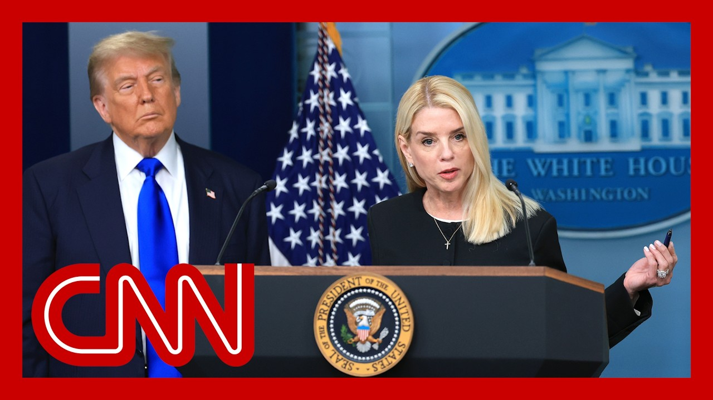

【CNN News 20250710 特朗普支持者和白宫官员对司法部处理爱泼斯坦案的方式感到愤怒】
Summary: Outrage grows among Trump supporters and White House officials over the DOJ's handling of the Epstein case, with calls to fire Attorney General Pam Bondi after a memo confirmed Epstein's suicide and denied the existence of a "client list," contradicting earlier promises of bombshell revelations.
摘要： 特朗普支持者和白宫官员对司法部处理爱泼斯坦案的方式感到愤怒，要求解雇司法部长帕姆·邦迪，因一份备忘录证实爱泼斯坦系自杀且否认存在“客户名单”，与此前承诺的爆炸性披露相矛盾。

⏱️ Estimated Reading Time: 17 min
📚 四级生词 📚 六级生词 📚 雅思生词 📚 托福生词 📚 专八生词 📚 SAT生词 📚 考研生词 📚 GRE生词 📚 高考生词 📚 其它生词生词
New this morning outrage among the president's own supporters over how the Department of Justice is handling the so-called Jeffrey Epstein files.
今晨，总统的支持者对司法部处理所谓的杰弗里·爱泼斯坦文件的方式感到愤怒。
In a series of scathing posts on Twitter.
在一系列尖锐的推特帖子中。
Longtime Trump ally, fierce supporter Laura Loomer called for the president to fire Attorney General Pam Bondi.
长期支持特朗普的激烈拥护者劳拉·卢默呼吁总统解雇司法部长帕姆·邦迪。
So happened after a memo released by the Department of Justice and the FBI this week said that accused sex trafficker Jeffrey Epstein died by suicide, confirmed that the attorney general also said there is no evidence that Epstein kept a, quote, client list despite previously suggesting there would be some kind of bombshell.
此前，司法部和联邦调查局本周发布的备忘录称，被指控性贩卖的杰弗里·爱泼斯坦死于自杀，司法部长还确认没有证据表明爱泼斯坦保留了所谓的“客户名单”，尽管此前暗示会有爆炸性内容。
CNN's Elena Treen live at the white House this morning, where this just doesn't seem to be going away.
CNN的埃琳娜·特林今早在白宫现场报道，此事似乎并未平息。
Yeah, John.
是的，约翰。
And it's not just, you know, people who are in the MAGA movement in the president's base.
而且不仅是总统基础中的MAGA运动人士。
And I will say there's many.
我要说的是，这样的人很多。
It's not just Laura Loomer, but many other prominent people like Tucker Carlson, Steve Bannon, the list goes on, who have been really reeling from the drop of that memo that the Justice Department released on Sunday, essentially concluding, and their words that Jeffrey Epstein died by suicide and that there's no so-called client list, but there's a lot of people as well.
不仅是劳拉·卢默，还有塔克·卡尔森、史蒂夫·班农等其他知名人士，他们对司法部周日发布的备忘录感到震惊，备忘录最终认定杰弗里·爱泼斯坦死于自杀且不存在所谓的客户名单。
Inside the white House, the president's own officials who are increasingly frustrated with how not just the Justice Department, but specifically Attorney General Pam Bondi, has handled this.
白宫内，总统的官员们对司法部，尤其是司法部长帕姆·邦迪的处理方式愈发不满。
I mean, I spoke with one Trump adviser.
我采访了一位特朗普顾问。
They said that Bondi had, bungled this case from the start by over promising, some of the findings that they were anticipating.
他们表示，邦迪从一开始就搞砸了此案，过度承诺了预期的调查结果。
Another adviser told me that this was a political nightmare, questioning why they released this at this point in time, in the way in which they did it.
另一位顾问称这是一场政治噩梦，质疑他们为何在此时以这种方式发布。
Again, releasing this a short memo and also leaking it to a certain media outlet.
再次，发布这份简短备忘录并泄露给特定媒体。
look, part of these problems as well that adds to all of this is Bundy's own claim.
此外，邦迪此前的声明加剧了问题。
Back in February, when she was doing an interview with Fox News where she said she had the client list on her desk for review.
今年二月，她在接受福克斯新闻采访时声称客户名单就在她的桌上待审。
She was pressed on some of these questions yesterday during the president's cabinet meeting, and tried to argue that she was referring to the broader case.
昨天在总统内阁会议上，她被追问这些问题，并试图辩称自己指的是更广泛的案件。
I want you to take a listen to both both that interview, but also her response.
请听那段采访和她的回应。
It's sitting on my desk right now to review, that's been a directive by President Trump.
它现在就在我的桌上待审，这是特朗普总统的指示。
I'm reviewing that.
我正在审查。
I was asked a question about the client list, and my response was, it's sitting on my desk to be reviewed, meaning the file along with the JFK, MLK files as well.
我被问及客户名单时回答“它在我桌上待审”，指的是与肯尼迪、马丁·路德·金案相关的文件。
That's what I meant by that.
这就是我的意思。
Now, look, we talked to a lot of different people following, Bonnie's answer there yesterday in that cabinet room who said, essentially, they are not satisfied by that answer, particularly given so many people in the MAGA movement, so many of the president's supporters, and including even some people in his own administration, had previously argued that there were so much more to this case, particularly wanting to unearth potential accomplices to Jeffrey Epstein.
昨天内阁会议后，我们采访了许多人，他们对邦迪的回答不满意，尤其是MAGA运动和总统支持者，甚至包括政府内部人士，此前坚称此案有更多内幕，特别是想揭露爱泼斯坦的潜在共犯。
Not totally satisfied by this.
他们对此并不完全满意。
Now, the president, for his part, John has argued, that this is old news.
总统本人则认为这是旧闻。
He kind of dismissed some of the questions on this yesterday in that cabinet meeting as a desecration.
他在内阁会议上将相关问题斥为亵渎。
And we are told that he's not acutely, you know, annoyed with Bondi herself.
据悉，他并未对邦迪本人感到特别恼火。
He was briefed on some of these findings last week by Bondi and the FBI director, Kash Patel.
上周，邦迪和联邦调查局局长卡什·帕特尔向他汇报了部分调查结果。
But still, a lot of people inside the white House not exactly happy with how this all played out.
但白宫内部许多人对事态发展并不满意。
All right, Elaine, a train at the white House this morning.
好的，今早白宫的埃琳娜。
Thank you.
谢谢。
With us now, CNN political commentator, Republican strategist for Michael Singleton and Christine Quinn, the executive committee chair of the New York State Democratic Committee.
现在与我们连线的是CNN政治评论员、共和党策略师迈克尔·辛格尔顿和纽约州民主党委员会执行主席克里斯汀·奎因。
And just to review some of the people calling for Bondi, head here.
回顾一些要求邦迪下台的人。
Again, it's Laura Loomer, fierce supporter of the president, putting out these tweets.
劳拉·卢默再次发推。
She needs to be fired.
她应该被解雇。
She has tainted the investigation.
她玷污了调查。
Elon Musk, one time friend of the president, saying, how can people be expected to have faith in Trump if he won't release the Epstein files?
总统昔日的朋友埃隆·马斯克质问：如果特朗普不公布爱泼斯坦文件，人们如何信任他？
And then Megan Kelly in Politico pointed this out this morning, said of Pam Bondi, her days are numbered as a member of the Trump administration.
梅根·凯利在《政客》杂志今早指出，邦迪在特朗普政府中的日子屈指可数。
I mean, sure, Michael, this isn't just one person now.
迈克尔，现在不止一个人。
It's a lot and it's not getting quieter, it's getting louder, it's not getting quieter.
声音越来越大，而非减弱。
And she made a statement that many believed was accurate, which was that she was going to attempt to prosecute, the individuals, whether it's Republican men, Democratic men who were engaged with Jeffrey Epstein and doing some pretty atrocious and disgusting things against young girls and young age young women.
她曾声明将起诉与爱泼斯坦往来的共和党或民主党人士，这些人对年轻女孩犯下恶劣行径，许多人认为这一承诺属实。
I mean, what type of society doesn't rally around protecting young girls and women?
什么样的社会不团结保护年轻女孩和女性？
I've been involved with groups in the past wanting to bring and shine a spotlight on these types of issues, and my hope would be the top cop in the nation would take this very seriously.
我曾参与团体揭露此类问题，希望国家最高执法者能严肃对待。
And she really isn't.
但她并未做到。
It.
这。
And a lot of Republicans are scratching their heads questioning why I think this is a bipartisan issue.
许多共和党人困惑不解，我认为这是两党共同关切。
I think Americans want these powerful men, whoever they are, to be brought to justice in.
美国人希望这些权贵，无论身份，被绳之以法。
The president was asked about this in this cabinet meeting yesterday.
总统昨日在内阁会议上被问及此事。
Let's listen to how he responded.
听听他的回应。
And are people still talking about this guy, this creep?
人们还在谈论这个变态吗？
That is unbelievable.
难以置信。
I mean, I can't believe you're asking a question at a time like this where we're having some of the greatest success and and also tragedy with what happened in Texas.
此时我们正经历得州的成功与悲剧，你竟问这种问题。
It just seems, like a desecration.
这简直是亵渎。
The president's wishing it away here, but it was his own supporters and people like JD Vance, not to mention the people we've all listed there talking about the Efcc files.
总统试图淡化此事，但他的支持者如JD·万斯等人仍在讨论爱泼斯坦文件。
All during the campaign.
整个竞选期间都是如此。
I mean, this was a thing that his people were pushing, and now he's like nothing to see here, right?
他的团队曾大力推动此事，现在他却说“无事发生”。
His people pushed it.
他的团队推动了它。
His appointee brought it back up square in front of everyone with saying there would be prosecutions, things would be released and now nothing.
他任命的邦迪公开承诺起诉和公布信息，如今却无果。
And what's a desecration is what happened to those girls and those young women, not reporters appropriately asking questions which are not new questions, but follow up questions to what Pam Bondi had already put out there.
真正的亵渎是那些女孩的遭遇，而非记者追问邦迪已提出的问题。
And when you make promises to prosecute, to release information and you don't, then all theories come up.
承诺起诉和公布信息却未兑现，会引发各种猜测。
And it's a terrible thing that there are people saying the president might be on the list.
有人说总统可能在名单上，这很糟糕。
How horrible would that be?
那该多可怕？
They can put all of this to rest by putting all the information out there.
公布所有信息才能平息争议。
And you're right, this isn't Republican or Democrat.
你说得对，这不是党派问题。
This is a matter of justice.
这是正义问题。
And that is what Pam Bondi should have said about what Pam Bondi I mean, these conservatives, Megan Kelly, I mean, even, Tucker Carlson talking about this.
邦迪本应如此表态，但梅根·凯利、塔克·卡尔森等保守派也在讨论。
Charlie Kirk had a post on that.
查理·柯克发帖。
And he said, if even if Republicans were on the list, would you be okay with them being brought to justice?
他问：即使共和党人在名单上，你们能接受他们被审判吗？
And overwhelmingly, the responses were, yes, because people want to protect the innocence of young girls and young women, and we should all be about that.
绝大多数回答“是”，因为人们想保护女孩的纯真，我们应为此努力。
Again, it was people within this administration promising it would be released.
政府内部人士曾承诺公布信息。
We'll see where this goes next.
且看后续发展。
This is supposed to be about the most transparent administration ever.
这本应是史上最透明的政府。
What on earth is going on?
到底怎么回事？
Was Pam Bondi set up by deep state FBI career officials?
邦迪被FBI深层政府官员陷害了吗？
Is she stupid?
她蠢吗？
Is she so click thirsty that she got out over her skis trying to make news?
她为博眼球而夸大其词吗？
Being a Fox News star Pam Bondi all of it.
作为福克斯新闻明星的邦迪。
All those videos are saying that she's seen the videos.
那些视频显示她看过录像。
It's all coming out and then now it doesn't exist.
曾说一切将曝光，如今却不存在。
I mean, what what, Alex Jones broadcasting from his car.
亚历克斯·琼斯在车里直播。
Okay, so how much of a political risk is President Trump taking by dismissing the priorities of portions of the base?
特朗普忽视部分基本盘的优先事项，政治风险多大？
CNN's Erin Blake writes, everyone has their limits.
CNN的艾琳·布莱克写道：每个人都有自己的底线。
Trump's giving them reasons to be suspect about his and top administration officials intentions.
特朗普让他们怀疑他和高层官员的意图。
And there's been at least some evidence of a brewing backlash.
已有迹象表明反弹在酝酿。
Group chat is back.
群聊又活跃了。
I have to be honest, I remember the backlash, you know, many minutes ago over the strikes on Iran, and it feels like that's a way more significant, an important issue than that.
老实说，此前对伊朗空袭的反弹比这更重要。
And everybody rolled.
大家翻篇了。
Yeah.
是的。
I mean, I think two things I think we've seen President Trump this from this sermon last term be like a rain jacket.
我认为两点：特朗普像雨衣一样避开争议。
Some of these things just roll off of him.
有些事对他毫无影响。
But here's the reality I think we've all been afraid to say this.
但现实是——我们一直不敢说——
President Donald Trump is a is a lame duck president.
特朗普已是跛脚鸭总统。
And so some of these things you're talking about politically will not hurt him because he is a lame duck president.
因此这些政治问题不会伤害他。
What I'm concerned about what's going to happen in 2026 with the Congress, with Senate.
我更担心2026年国会和参议院的情况。
So I think some of these things are going to be harder for the Republican Party to talk about than this.
共和党谈论这些将更困难。
President Trump.
特朗普总统。
But I'll be honest, there are so many weird, bizarro Addams Family esque stories that people go down rabbit holes when it comes to the MAGA base.
但MAGA基础派沉迷于各种离奇阴谋论。
I've never read a Jeffrey Epstein story.
我从不看爱泼斯坦的故事。
When somebody complains that Donald Trump has not told us where Elvis is really living, I'm not going to read that ever.
若有人抱怨特朗普未透露猫王真身，我绝不会理会。
Also, because Donald Trump is right, we have Texas and we have what's going on with Russia and Ukraine.
而且特朗普说得对，我们需关注得州和俄乌局势。
We have.
我们有。
But no one asked Pam Bondi to make a bunch of binders to hang, you know, listen to the Twitterati.
但没人要求邦迪搞一堆活页夹来迎合推特圈。
It's like itself, I think, the mental health of America or Americans is much better off not paying attention to those crazy shiny things.
忽略这些疯狂噱头对美国人的心理健康更好。
Well, to be fair, President Trump has also said of his cabinet to be these sort of TV Twitter, right, professionals.
公平地说，特朗普要求内阁成为电视推特型专业人士。
Yeah, exactly.
没错。
Always.
一贯如此。
I always that's kind of baked in.
这已根深蒂固。
Yeah, I do think there.
是的。
So there are a few different stories that we're all going to look at as like litmus tests of how far can the president depart from the MAGA base or press them.
有几件事可测试总统能多大程度背离MAGA基本盘。
I do think, like a conspiracy story that, Circle spent a long time standing until he came into office, and then they had to like they were the establishment, that they were the government, and they had to decide what information to release is a little bit different than whether he's changing his policy on Russia, Ukraine or on how to handle deportations of, undocumented migrants who are not violent and haven't committed any crimes inside the United States.
阴谋论与他改变对俄乌政策或驱逐非暴力无证移民的政策不同。
Like I put those in two different categories.
我将其分为两类。
They both may be tests of the MAGA base.
二者都可能测试MAGA基本盘。
Yeah, but one is like substantively, unless you really think there's like a triple conspiracy going on.
但除非你认为有三重阴谋，否则一类是实质性的。
There wasn't any there, there to the Epstein files.
爱泼斯坦文件并无实质内容。
And now the sitting president administration has to say yes as opposed to a change in us.
现任政府必须承认这点，而非改变立场。
We also heard one of the folks in that video talking about doing it for clicks.
视频中有人提到为点击量而做。
This whole industry is for clicks, right?
整个行业都为点击量，对吧？
So I think the question I in a way, I'm kind of asking is, you know, if you ride this certain, horse into battle like it was to their advantage to embrace this when it ginned up interest for him in the party, and now it felt a little bit like he was saying, let the adults talk.
所以我想，我在某种程度上提出的问题是，如果你像他们那样在党内为他激起兴趣时顺势而为，现在却感觉他有点像是在说，让大人们来谈。
Yeah, I think historically, if you look at those people who who backed, candidates very, very early, they're the first ones to have their hearts broken in certain sort of ways.
是的，我认为从历史上看，如果你看看那些非常早期支持候选人的人，他们往往是第一批在某些方面心碎的人。
You go back to the people who endorsed Ronald Reagan in 1976.
回顾1976年支持罗纳德·里根的人。
They were the ones who said, well, wait a second, why are you talking to Russians to begin with?
他们就是那些会说，等一下，你一开始为什么要和俄罗斯人谈话？
So this is normal in some sense.
所以这在某种意义上是正常的。
It's just because Donald Trump has brought so much abnormality to our politics that we're talking about this kind of stuff.
只是因为唐纳德·特朗普给我们的政治带来了如此多的反常，我们才会谈论这类事情。